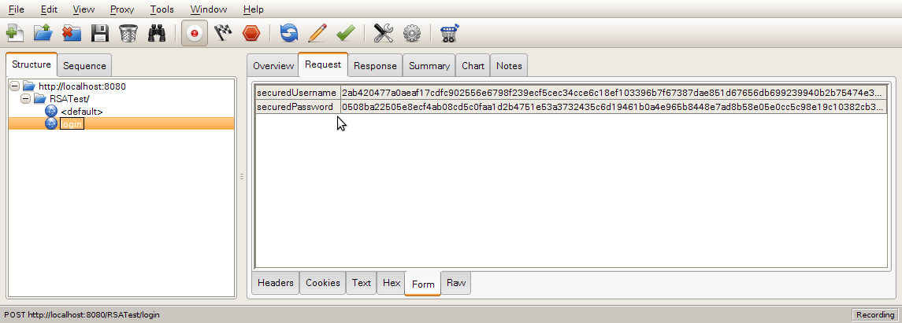

웹 페이지에서 SSL 없이 RSA 암호화 로그인 하기
사용자의 비밀번호를 전송할 때는 SSL 등의 처리를 하지 않으면 해당 비밀번호를 중간에 가로채서 보는 것이 가능하다. 그러나 비영리 싸이트 혹은 SSL 인증서 구매가 어려운 경우에 JavaScript로 RSA 암호화를 이용해서 암호화된 로그인이 가능하다.
RSA는 비대칭 방식으로 암호화는 공개키(누구나 볼 수 있다)로 하고 복호화는 개인키를 가진쪽만 가능한 형태이다.
사용자가 로그인 폼을 채우면 사용자 ID와 비밀번호를 RSA 공개키로 암호화해서 전송하여, 중간에 패킷을 가로채도 해석이 불가능하게 만드는 것이다.
이와 같은 것을 구현하고 싶어진 계기는 회사 내부적으로 사용하는 운영용 싸이트의 로그인 정보를 암호화해야 겠다는 생각이 들었기 때문이다. 그러면서 돈 안 쓰고 특정 브라우저에 종속되지 않으면서도 안전한 사이트 이용을 가능하게 하는 방법을 찾다가 메가박스 홈페이지가 2010년 6월 현재 SSL과 ActiveX없이 그렇게 구현돼 있는 것을 보았다.
이와 같은 로그인 및 데이터 전송 방식에 대해서는 알아야 막는다 자바 JSP 해킹과 보안 책에서 정보를 얻어서 BigIntegers and RSA in JavaScript 라이브러리를 사용하였다.
참고로 해당 라이브러리에서 제공하는 BASE64 인코더에 문제가 있는 것으로 보인다. 책에서 소개한대로 이 BASE64 인코딩 라이브러리를 사용하면 FireFox에서는 오동작을 한다. 그래서 BASE64를 사용하지 않고 암호화된 바이트 배열을 그냥 16진 문자열(hex)로 서버에 전송한다.
알아야 막는다 자바 JSP 해킹과 보안 책의 방식대로 하면 세션에 무한정 PrivateKey를 저장해서 메모리 누수를 일으킬 수 있다. 이 책 그대로 따라하면 안된다.
사실 그냥 HTTPS 사용하면 더 안전하게 아무 처리 없이 다 해결되는 문제들이다. 하지만 내부 적으로만 사용하는 서비스들에 대해서 일일이 다 인증서를 등록할 수는 없으니 지금 소개하는 방식이 가장 쉽고 돈 안들이면서 안전하게 로그인 할 수 있는 방법이 되어 줄 것이다.
기본 작동 원리
- [서버] 서버측에서 RSA 공개키와 개인키(비밀키)를 생성하여, 개인키는 세션에 저장하고 공개키는 자바스크립트 로그인 폼이 있는 페이지로 출력한다.
- [클라이언트] 로그인폼은 자바스크립트가 실행되지 않는 환경에서는 발행(submit)이 되면 안된다.
-
[클라이언트] 로그인폼에 사용자의 ID와 비밀번호를 넣고 발행을 누르면 자바스크립트가 이를 가로챈다.
- 사용자 ID를 RSA로 암호화하여 화면에 안보이는 새로운 폼에 저장한다.
- 비밀번호를 RSA로 암호화하여 화면에 안보이는 새로운 폼에 저장한다.
- 이제 화면에 안보이는 해당 폼을 서버로 발행한다.
- [서버] 서버측에서 세션에 저장된 RSA개인키로 암호화된 사용자ID와 비밀번호를 복호화한다.
- [서버] 데이터베이스/혹은 기타 저장소에 저장된 사용자 ID와 비밀번호가 일치하는지 확인한다.
주의할 점. 암호화 된 값은 byte 배열이다. 이를 문자열 폼으로 전송하기 위해 16진 문자열(hex)로 변경한다. 서버측에서도 값을 받을 때 hex 문자열을 받아서 이를 다시 byte 배열로 바꾼 뒤에 복호화 과정을 수행한다.
Java 로그인 폼 측 키생성
로그인 폼을 보여주는 화면을 출력할 때, 그와 동시에 공개키와 개인키를 생성해서 공개키는 HTML/Javascript에서 접근 가능하게 노출하고 개인키는 HTTP 세션에 보관하여 암호를 풀 때 사용하도록 처리한다.
- KeyPairGenerator generator = KeyPairGenerator.getInstance("RSA");
generator.initialize(KEY_SIZE);
KeyPair keyPair = generator.genKeyPair();
KeyFactory keyFactory = KeyFactory.getInstance("RSA");
PublicKey publicKey = keyPair.getPublic();
PrivateKey privateKey = keyPair.getPrivate();
HttpSession session = request.getSession();
// 세션에 공개키의 문자열을 키로하여 개인키를 저장한다.
session.setAttribute("__rsaPrivateKey__", privateKey);
// 공개키를 문자열로 변환하여 JavaScript RSA 라이브러리 넘겨준다.
RSAPublicKeySpec publicSpec = (RSAPublicKeySpec) keyFactory.getKeySpec(publicKey, RSAPublicKeySpec.class);
String publicKeyModulus = publicSpec.getModulus().toString(16);
String publicKeyExponent = publicSpec.getPublicExponent().toString(16);
request.setAttribute("publicKeyModulus", publicKeyModulus);
request.setAttribute("publicKeyExponent", publicKeyExponent);
request.getRequestDispatcher("/WEB-INF/views/loginForm.jsp").forward(request, response);
loginForm.jsp 에서 실제로 폼을 출력하는 역할을 한다.
HTML 폼
- <!-- script 태그에서 가져오는 자바스크립트 파일의 순서에 주의해야한다! 순서가 틀릴경우 자바스크립트 오류가 발생한다. -->
<script type="text/javascript" src="<%=request.getContextPath()%>/js/rsa/jsbn.js"></script>
<script type="text/javascript" src="<%=request.getContextPath()%>/js/rsa/rsa.js"></script>
<script type="text/javascript" src="<%=request.getContextPath()%>/js/rsa/prng4.js"></script>
<script type="text/javascript" src="<%=request.getContextPath()%>/js/rsa/rng.js"></script>
<script type="text/javascript" src="<%=request.getContextPath()%>/js/login.js"></script>
</head>
<body>
<div>
<label for="username">사용자ID : <input type="text" id="username" size="16"/></label>
<label for="password">비밀번호 : <input type="password" id="password" size="16" /></label>
<input type="hidden" id="rsaPublicKeyModulus" value="<%=publicKeyModulus%>" />
<input type="hidden" id="rsaPublicKeyExponent" value="<%=publicKeyExponent%>" />
<a href="<%=request.getContextPath()%>/loginFailure.jsp" onclick="validateEncryptedForm(); return false;">로그인</a>
</div>
<form id="securedLoginForm" name="securedLoginForm" action="<%=request.getContextPath()%>/login" method="post" style="display: none;">
<input type="hidden" name="securedUsername" id="securedUsername" value="" />
<input type="hidden" name="securedPassword" id="securedPassword" value="" />
</form>
</body>
폼을 이중으로 만들었는데, 이유가 있다. 폼에 submit 버튼을 두게되면 사용자가 그냥 엔터를 쳐도 폼이 제출되게 된다. 이렇게 되면 사용자의 웹 브라우저가 Javascript를 지원하지 않아도 폼이 제출되므로 사용자가 쓴 아이디와 비밀번호가 그냥 전송되게 돼 버린다.
사용자가 ID와 비밀번호를 친 뒤에 무조건 Javascript를 타게 만들기 위해 입력용 폼과 Javascript로 암호화하여 실제로 제출하는 폼을 분리한 것이다.
만약 사용자의 브라우저가 javascript를 지원하지 않는다면, 로그인 링크의 loginFailure.jsp 페이지가 보여지게 된다.
자바스크립트 암호화 처리
- function validateEncryptedForm() {
var username = document.getElementById("username").value;
var password = document.getElementById("password").value;
if (!username || !password) {
alert("ID/비밀번호를 입력해주세요.");
return false;
}
try {
var rsaPublicKeyModulus = document.getElementById("rsaPublicKeyModulus").value;
var rsaPublicKeyExponent = document.getElementById("rsaPublicKeyExponent").value;
submitEncryptedForm(username,password, rsaPublicKeyModulus, rsaPublicKeyExponent);
} catch(err) {
alert(err);
}
return false;
}
function submitEncryptedForm(username, password, rsaPublicKeyModulus, rsaPpublicKeyExponent) {
var rsa = new RSAKey();
rsa.setPublic(rsaPublicKeyModulus, rsaPpublicKeyExponent);
// 사용자ID와 비밀번호를 RSA로 암호화한다.
var securedUsername = rsa.encrypt(username);
var securedPassword = rsa.encrypt(password);
// POST 로그인 폼에 값을 설정하고 발행(submit) 한다.
var securedLoginForm = document.getElementById("securedLoginForm");
securedLoginForm.securedUsername.value = securedUsername;
securedLoginForm.securedPassword.value = securedPassword;
securedLoginForm.submit();
실질적인 암호화는 submitEncryptedForm에서 이뤄진다. 공개키의 rsaPublicKeyModulus와 rsaPublicKeyExponent 값을 읽어 RSA 객체를 구성하고 이를 가지고 사용자의 ID와 비밀번호를 모두 암호화하여 전송용 폼에 암호화된 값을 지정하고 폼을 제출(submit)한다.
Java 측 복호화하여 사용자 ID,비밀번호 확인
- /**
* 암호화된 비밀번호를 복호화 한다.
*/
protected void processRequest(HttpServletRequest request, HttpServletResponse response)
throws ServletException, IOException {
String securedUsername = request.getParameter("securedUsername");
String securedPassword = request.getParameter("securedPassword");
HttpSession session = request.getSession();
PrivateKey privateKey = (PrivateKey) session.getAttribute("__rsaPrivateKey__");
session.removeAttribute("__rsaPrivateKey__"); // 키의 재사용을 막는다. 항상 새로운 키를 받도록 강제.
if (privateKey == null) {
throw new RuntimeException("암호화 비밀키 정보를 찾을 수 없습니다.");
}
try {
String username = decryptRsa(privateKey, securedUsername);
String password = decryptRsa(privateKey, securedPassword);
request.setAttribute("username", username);
request.setAttribute("password", password);
request.getRequestDispatcher("/WEB-INF/views/login.jsp").forward(request, response);
} catch (Exception ex) {
throw new ServletException(ex.getMessage(), ex);
}
}
private String decryptRsa(PrivateKey privateKey, String securedValue) throws Exception {
System.out.println("will decrypt : " + securedValue);
Cipher cipher = Cipher.getInstance("RSA");
byte[] encryptedBytes = hexToByteArray(securedValue);
cipher.init(Cipher.DECRYPT_MODE, privateKey);
byte[] decryptedBytes = cipher.doFinal(encryptedBytes);
String decryptedValue = new String(decryptedBytes, "utf-8"); // 문자 인코딩 주의.
return decryptedValue;
}
/**
* 16진 문자열을 byte 배열로 변환한다.
*/
public static byte[] hexToByteArray(String hex) {
if (hex == null || hex.length() % 2 != 0) {
return new byte[]{};
}
byte[] bytes = new byte[hex.length() / 2];
for (int i = 0; i < hex.length(); i += 2) {
byte value = (byte)Integer.parseInt(hex.substring(i, i + 2), 16);
bytes[(int) Math.floor(i / 2)] = value;
}
return bytes;
}
사용자의 로그인 정보를 받아서 실제 사용자가 맞는지 확인하는쪽 컨트롤러이다. 여기서는 그냥 사용자의 입력을 화면에 다시 출력해주도록 만들었다.
HTTP 세션에서 앞서 저장한 개인키를 읽는다. 만약 변조된 공개키로 암호화를 했거나 개인키가 존재하지 않는 상황이라면 물론 오류가 발생한다.
그리고 세션에서 개인키를 지워버린다. 절대로 동일 개인키로 두 번이상 로그인 할 수 없게 만들었다.
어떻게 전송되나
아래 이미지는 실제 전송되는 데이터를 Charles 라는 HTTP 프록시 툴로 살펴본 것이다. 사용자의 ID와 비밀번호가 모두 암호화되어 원형을 알아 볼 수 없음을 볼 수 있다.

이상이 끝. 관련 파일을 모두 함께 올려둔다. WAR 는 실행하고서 http://localhost:8080/RSATest 로 접속하면 된다.
기타
사실 정말로 원한 것은 AES로 사용자의 정보를 암호화하고 AES키를 RSA공개키로 암호화하여 서버에 전달 한뒤, 서버에서 RSA 개인키로 AES키를 복호화해 알아내고, 그 AES키로 다시 사용자 정보를 복호화하는 이중 암호화를 시도했었다.
그러나 그닥 녹록치 않아서, 일단 RSA 기반의 단일 암호화로 만족한 상태이다.
이 글은 스프링노트에서 작성되었습니다.